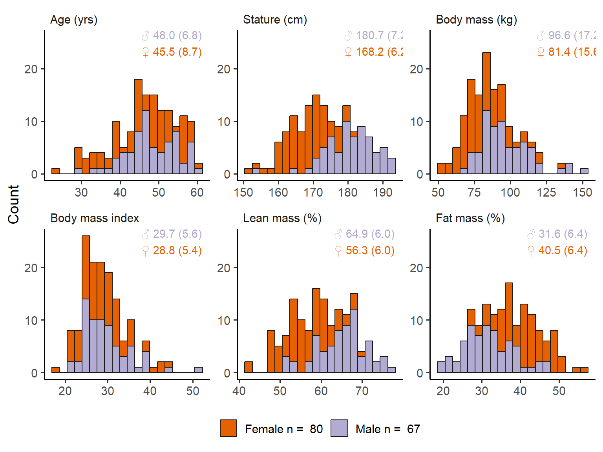
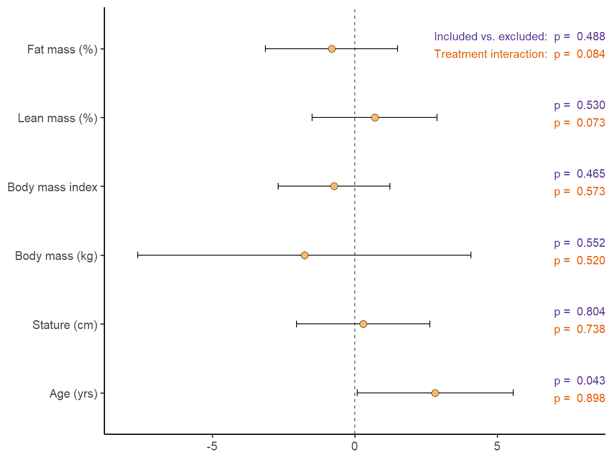
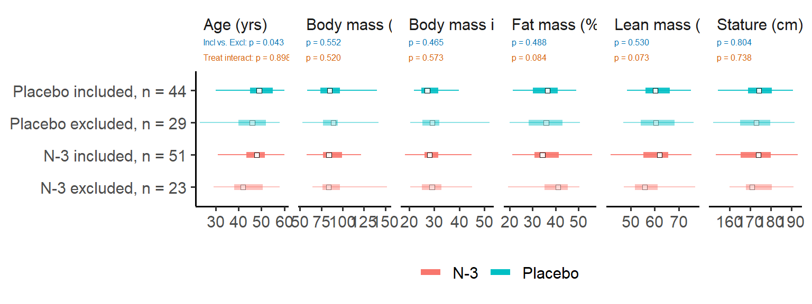

| Sex | Placebo | Omega-3 | ||||
|---|---|---|---|---|---|---|
| Age | BMI | n | Age | BMI | n | |
| Male | 49.3 (6.1) | 29.9 (5.4) | 23 | 47.4 (6.9) | 29.3 (3.4) | 23 |
| Female | 48.6 (8.2) | 27.8 (4.5) | 21 | 46.3 (7.4) | 28.9 (6.4) | 28 |
Precision nutrition: N-3 and adaptations to resistance training
Methods

Included excluded


## Vastus lateralis data
dat_fm <- part %>%
mutate(participant = as.character(participant)) %>%
inner_join(AOData::bodycomp) %>%
mutate(rel.fm = 100 * (fat.legs / (fat.legs + lean.legs + BMC.legs))) %>%
select(participant, time, sex, bmi, rel.fm) %>%
inner_join(mutate(AOData::thickness, participant = as.character(participant))) %>%
select(-VIthick) %>%
pivot_wider(names_from = time, values_from = c(VLthick, rel.fm),
values_fn = mean) %>%
print()Joining with `by = join_by(participant)`
Joining with `by = join_by(participant, time)`Warning in inner_join(., mutate(AOData::thickness, participant = as.character(participant))): Detected an unexpected many-to-many relationship between `x` and `y`.
ℹ Row 1 of `x` matches multiple rows in `y`.
ℹ Row 949 of `y` matches multiple rows in `x`.
ℹ If a many-to-many relationship is expected, set `relationship =
"many-to-many"` to silence this warning.# A tibble: 294 × 13
participant sex bmi leg condition VLthick_T1 VLthick_T2 VLthick_T3
<chr> <chr> <dbl> <chr> <chr> <dbl> <dbl> <dbl>
1 501 m 20.5 R RM30 16.2 16.2 18.5
2 501 m 20.5 L RM10 15.6 16.6 18.9
3 502 m 24.7 R RM30 21.1 NA NA
4 502 m 24.7 L RM10 19.8 NA NA
5 503 m 25.3 R RM10 17.4 18.8 21.3
6 503 m 25.3 L RM30 16.7 18.3 18.6
7 504 m 24.9 R RM30 24.5 25.2 26.6
8 504 m 24.9 L RM10 23.9 23.3 24.9
9 505 m 25.2 R RMNA 32.0 NA NA
10 505 m 25.2 L RMNA 33.2 NA NA
# ℹ 284 more rows
# ℹ 5 more variables: VLthick_T4 <dbl>, rel.fm_T1 <dbl>, rel.fm_T2 <dbl>,
# rel.fm_T3 <dbl>, rel.fm_T4 <dbl>